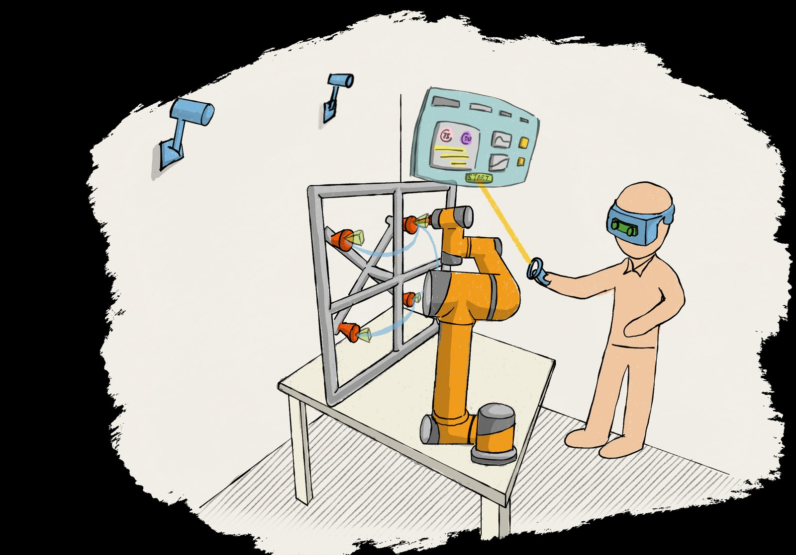
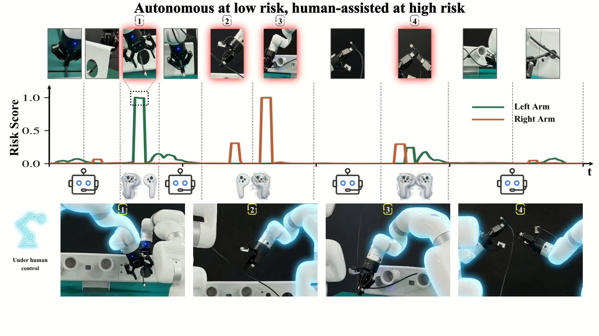
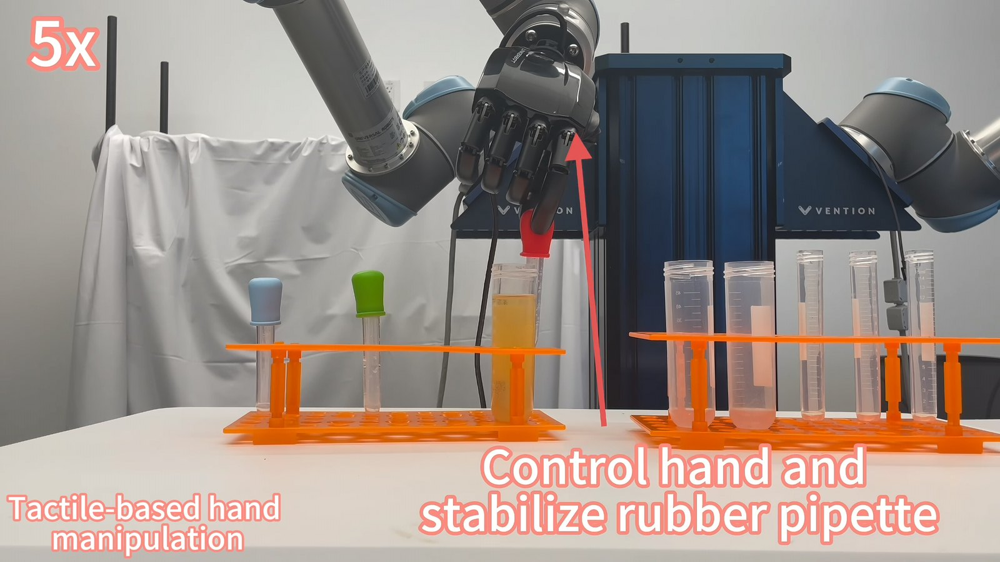
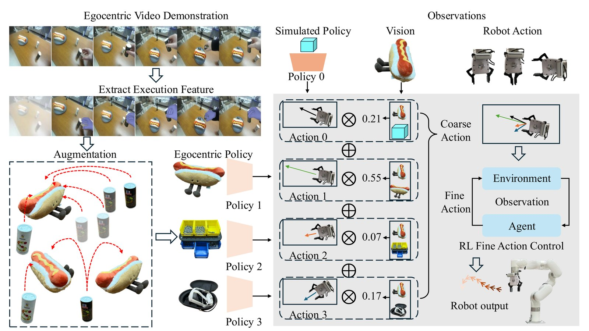
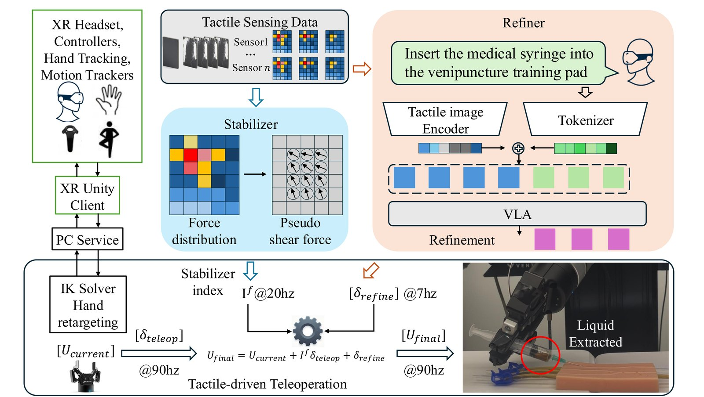
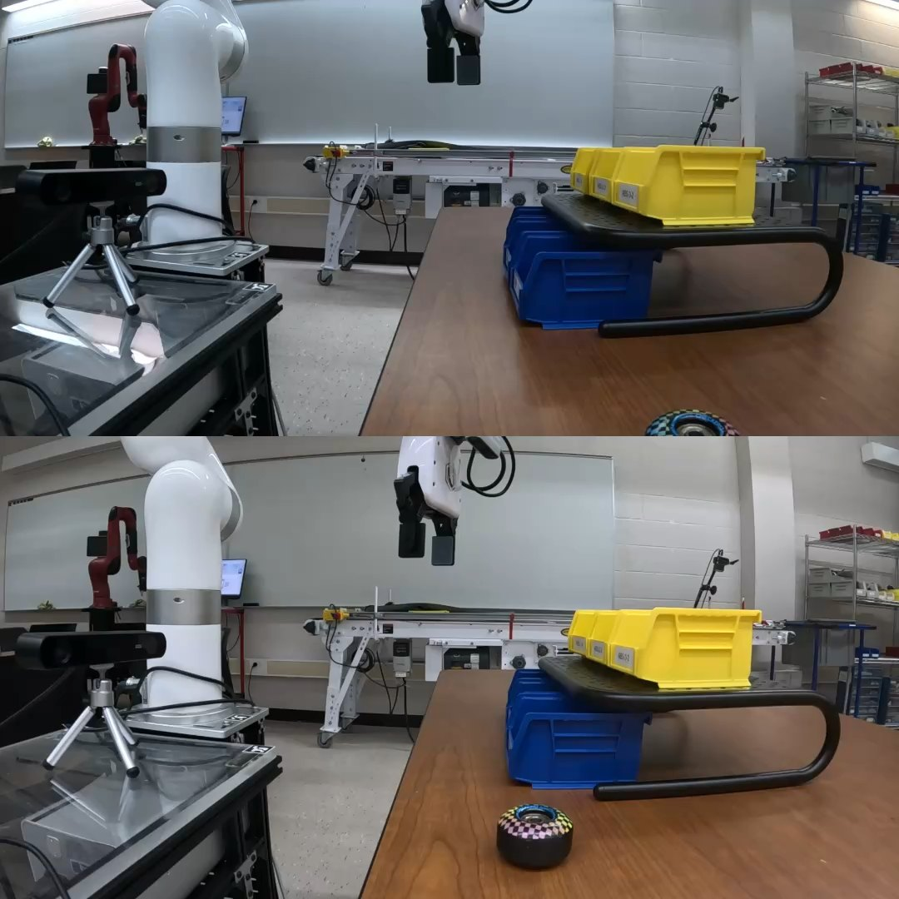
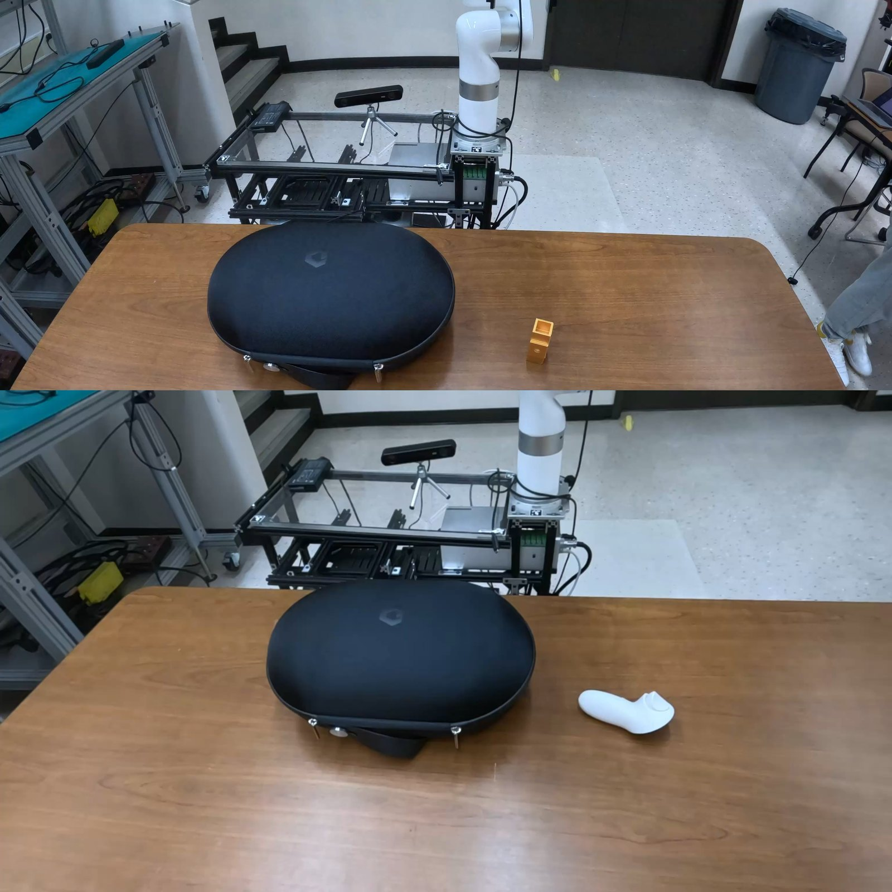
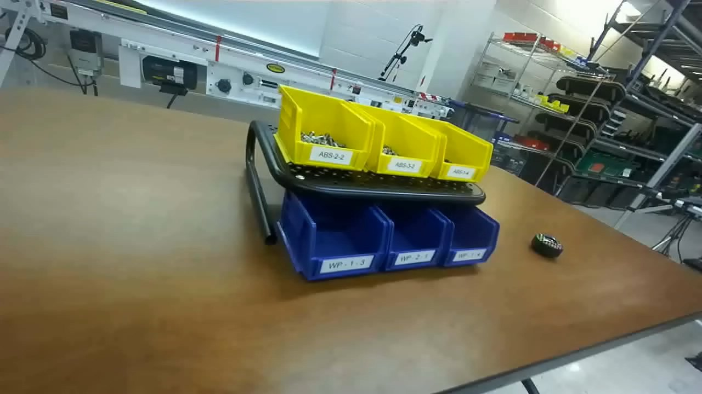
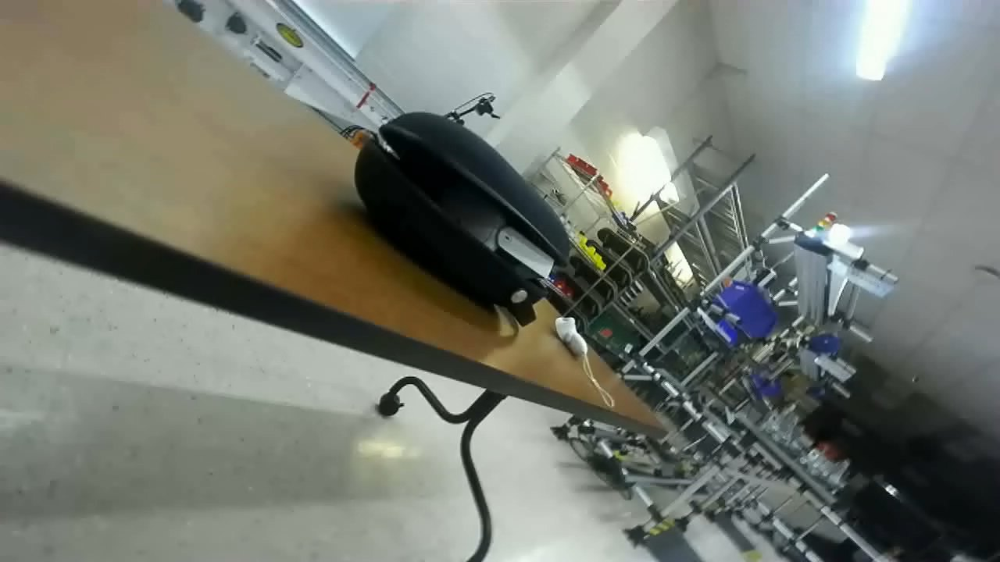

Technology
把人、数据和机器人接到同一个工作流里
智融的技术能力不是为了展示单点算法，而是为了让真实场景的示教、采集、培训、评测和执行能够接得起来。
Technology Route
不是先谈模型，而是先把复杂任务变成高质量数据
智融的技术路线，围绕同一条数据闭环展开：从遥操采集进入真实现场，用共享自主提升示教效率，用触觉与视觉补足复杂任务信息，再把这些过程沉淀成可迁移的具身模型能力。
-
01
遥操采集
先把复杂任务稳定记录下来，让真实操作成为数据入口。
-
02
共享自主
把低风险动作交给系统辅助，让长流程示教更稳、更省人力。
-
03
触觉增强
把视觉之外的接触信息采进来，支撑柔性物体和精细操作任务。
-
04
视频学习
把任务过程转成可迁移、可复用、可训练的第一视角模型能力。
-
05
评测部署
让训练结果回到真实工位，在验证中继续优化数据与系统。
Proof Points
每一个阶段，都对应可以被看见的技术证据
这些图不是装饰，而是这条技术路线在实验、采集和模型阶段已经展开的具体证明。
Stage 01
XR 遥操采集，让复杂任务第一次真正可采
通过所见即所得的遥操界面，把专家示教、任务理解和数据记录放进同一套工作流。复杂任务不再只是经验，而能被稳定地记录、复现和沉淀。
- 面向复杂装配、非结构化工位和远程示教场景
- 让真实操作过程成为高质量数据入口
- 把“难采”问题转化为技术壁垒与能力起点

阶段演示视频 点击展开，查看 XR 遥操采集在真实任务中的演示过程。
Stage 02
共享自主，让长流程示教更稳，也更高效
在采集工作流中加入风险引导和辅助控制后，复杂装配不再完全依赖持续人工控制。人负责关键判断，系统负责可辅助的部分，示教效率和稳定性同步提升。
- 适合长流程装配与双臂协同任务
- 降低示教疲劳与人力成本
- 让采集过程从“能做”走向“可持续做”

阶段演示视频 点击展开，查看共享自主如何进入复杂任务采集流程。
Stage 03
触觉增强，让接触丰富任务不只靠“看”来完成
面对柔性物体、精细接触和复杂操作，单纯依赖视觉往往不够。我们把触觉和视觉一起引入遥操与采集，让多模态信息真正服务于复杂任务成功率。
- 服务接触丰富、需要精细控制的工位任务
- 提升多模态数据采集的稳定性与可解释性
- 为后续具身模型训练提供更高质量样本

阶段演示视频 点击展开，查看触觉辅助遥操在接触丰富任务中的表现。
Stage 04
第一视角模型，让任务过程沉淀成可以迁移的模型能力
在稳定示教和多模态数据基础上，第一视角视频不再只是记录材料，而会进一步转化为可训练、可复用、可迁移的具身模型能力。
- 支持第一视角学习、技能分解与基础技能迁移
- 降低对海量重复遥操和标注的依赖
- 让训练结果更接近真实工位部署需求

阶段演示视频 点击展开，查看第一视角任务执行与模型相关演示。
Lab Evidence
实验现场，是这条路线继续向前推进的起点
从触觉驱动遥操架构，到桌面任务、第一视角执行和真实物体采集，技术路线不是停留在概念上，而是在一项项任务里继续被打磨。




